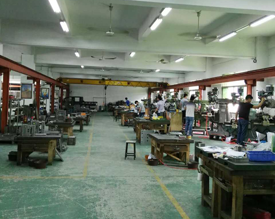
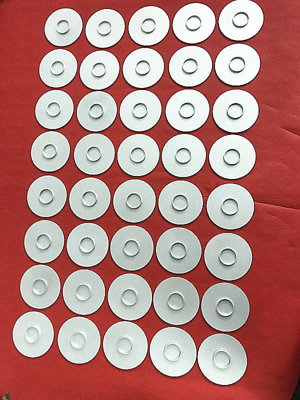
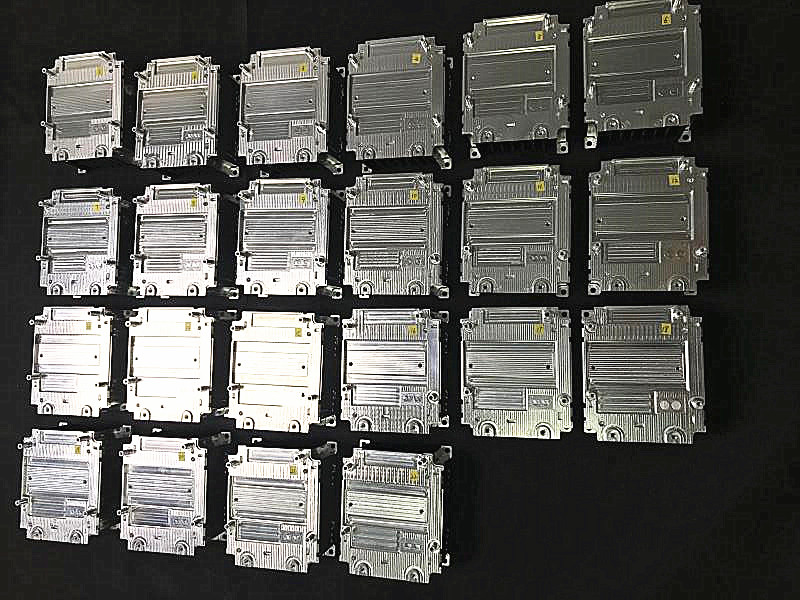
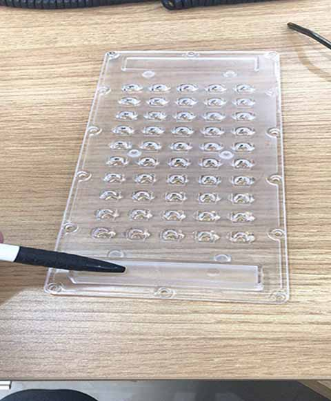
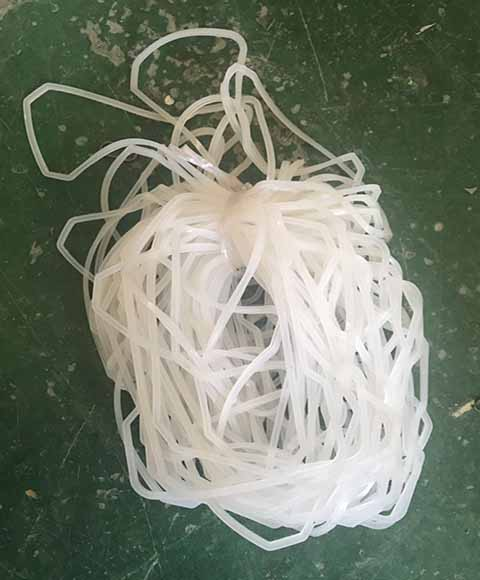
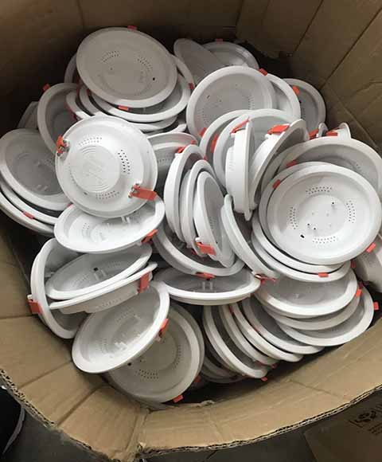
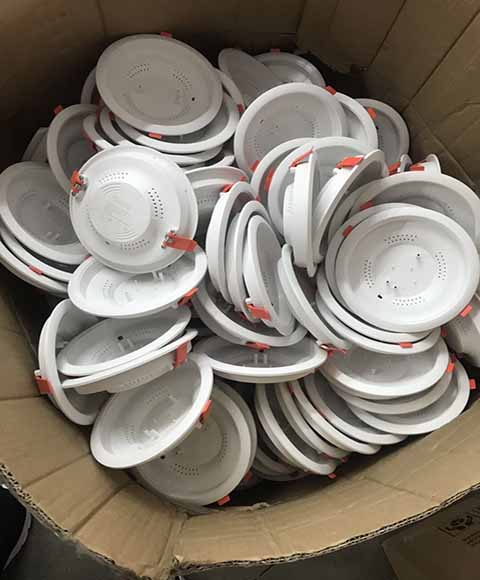
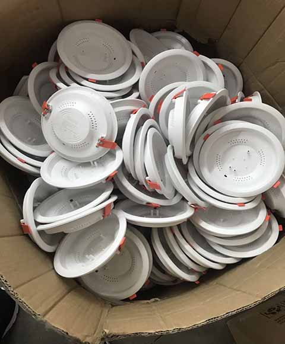

Batch production (precise parts) by milling/CNC
Precise milling machines and CNC can make very precise and fast running to make some batch production.
Running by NC turning and milling, multi-axis and multi-cutter machining technology, combined with precision machining tools and jigs, small batch precision parts can be perfectly made.
Running by NC turning and milling, multi-axis and multi-cutter machining technology, combined with precision machining tools and jigs, small batch precision parts can be perfectly made.


Rapid tooling
Make a rapid tool to realize those small volume productions by injection.
This can help to make real product on material, color surface required. But in short term and low price.
This can help to make real product on material, color surface required. But in short term and low price.




 

